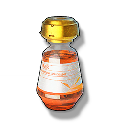

Revival Elixir Combination
Valuables

Using this item can instantly restore consciousness to all Resonators in the team, and can only be used once every 60 minutes (only effective for your own Character in multiplayer games).
Combination Revival Potion
[Potion Effect]Stabilizes the Resonator's condition to a certain extent, aids in the recovery of consciousness.
[Precautions]The interval between taking this type of potion is long, it is not recommended to use it excessively in a short period.
[Contraindications]Prohibited to use in combination with the same type of potion or frequency stabilizing type of potion.